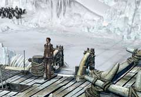
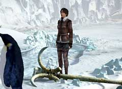
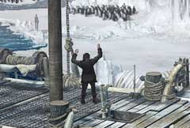

|

船が止まってしまったら、まずは船を下りて氷山へ行こう。そうしないと、何も始まらない。 イカリのある場所の途中で「クジラの牙」を入手しておこう。このアイテムは、何度か使うことになる。

イカリを見つけたら、先ほど手に入れたクジラの牙を使い氷山に穴を開けよう。イカリは非常に重いので、持ち上げるよりは簡単なはずだ。

イワンが登場しても、無視してよい。なぜなら彼にはこの船を動かすだけの知識も技術も無いからだ。彼が船を動かすことは万に一つもあり得ないのだが、できるだけ早く船へ移動する方法を探さなければならない。
| 次へ >> |
|